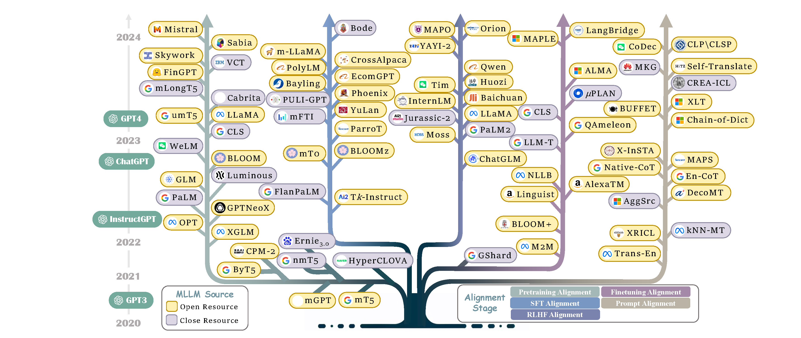

Trend
We have counted the publication of the recent MLLM papers to help everyone refer to it.
In addition, we have also counted the evolution of selected MLLMs over the past five years, where colored branches indicate different alignment stages. For models with multiple alignment stages, the final stage is represented.

Future Work
Here, we list potential areas for future exploration and improvement. We hope our work can provide the community with a quick access and spur breakthrough research in MLLMs.
Hallucination
The key challenges in this direction includes:
- Multilingual Hallucination Detection. How to effectively detect the hallucination phenomenon of MLLM across different languages is the primary problem to be solved in this field.
- Multilingual Hallucination Alleviation. Current strategies for hallucination alleviation still focus on incorporating extensive factual data or utilizing external systems, which pose significant challenges for multiple languages, especially low-resource languages.
Knowledge Editing
The key challenges of this research include:
- Continuous Knowledge Editing. How to continuously integrate new knowledge while preserve the accuracy of existing knowledge is a core challenge to explore.
- Balancing Universal and Language-Specific Knowledge. Current work often neglects language-specific details like culture and slang, impacting user experience and causing cultural conflicts. How to balance the universal knowledge, while preserve language-specific knowledge presents a fascinating question.
Safety
The main challenges for safe MLLM are as follows:
- Lack of Safety Benchmark. The lack of safe data in current literature hampers the relevant research. As a result, acquiring a large-scale safety dataset to facilitate the future is a hot topic.
- Removal of Unsafe Data. The multilingual data generated by MLLMs leads potential unsafe risks during training. Therefore, identifying and filtering out unsafe multilingual content is a crucial issue.
Fairness
The main concerns for fairness MLLM are as follows:
- Low-resource language performance improvement. It is essential to improve the performance of low-resource languages with limited data.
- Multilingual Token Cost Improvement. Current tokenizer exhibit biases in segmenting different languages, leading to varying token costs. Addressing this challenge is essential for ensuring fairer tokenization across languages.
Language Extension
This challenge encompasses two main aspects:
- Multiple Languages Extension. How to dynamically and effectively extend the languages for MLLMs is an interesting research question.
- Original Languages Preserving. Since the expansion of the model in other languages will harm the original language performance, how to prevent the language extension in MLLM from forgetting the previously learned language is a major challenge.
Multi-Modality Extension
This field faces two main challenges:
- Complex Reasoning Exploration. Current multi-modal MLLMs are limited to the simple cross-modal cross-lingual tasks, with a need for more exploration in complex reasoning.
- Comprehensive Benchmark. The current literature lacks of comprehensive benchmarks, which hinders progress and evaluation in this evolving field.